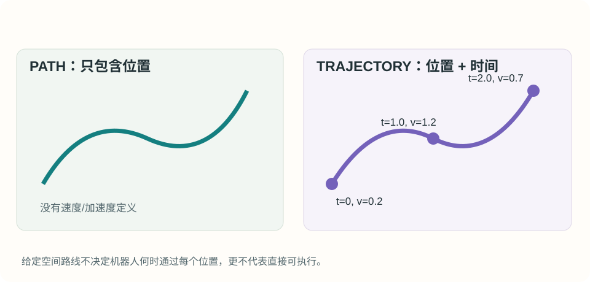
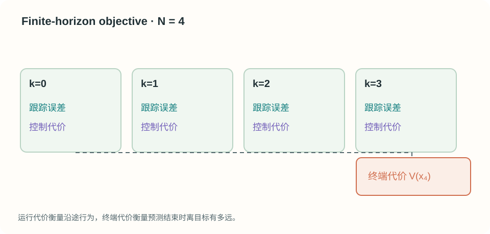
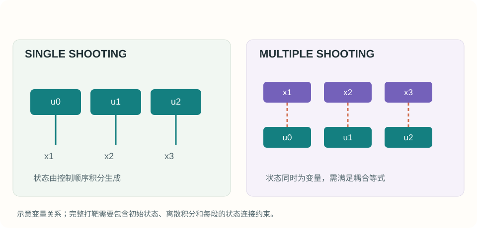

轨迹优化与 MPC：让一条路径变成能持续修正的控制
从简单的恒加速度模型推导轨迹优化：哪些是偏好、哪些是硬约束；为什么预测四步却只执行一步，以及下一次观测如何改写控制序列。
路径画完了，为什么机器人的电机仍然不能直接照着走？
纯几何路径只告诉机器人经过哪些位置，并不会说明各时刻如何加速、制动或转向。若位置在每个离散时间点都合法，但要求执行器瞬时从 0 跳到最大速度，这条轨迹也无法按规划运行。轨迹优化（trajectory optimization）将状态随时间的演化方程、输入幅值、速度、加速度、障碍边界和终端目标放入同一个优化问题。
模型预测控制（MPC）进一步采用滚动时域：每次从最新测量状态求一段未来控制序列，只执行第一项，然后重新观测再求解。这样可以修正模型预测偏差，但不意味着任意模型、任意求解器都能保证实时性或全局最优性。
OPTIMAL CONTROL / 22

写清楚状态、控制与离散动力学，优化才有计算基础
令 x_k 是第 k 个预测时刻的状态，可以包含位置、方向、速度及其它必要量；u_k 为输入，例如加速度或转向角速率；Δt 是采样周期。离散模型写作：
本章示例采用一维位置 x、速度 v、加速度指令 a，固定加速度作用一个采样周期：
当模型换成 Ackermann 车辆或机械臂，状态和非线性约束要随之改变。把“一维控制序列枚举”称为完整汽车 MPC 是不正确的。
代价要有分工：过程代价、控制代价、终端代价
常见有限时域目标是运行代价与终端代价之和。它可以惩罚偏离参考轨迹、输入过大、输入变化过快以及最终距离目标仍太远等问题。对 N 个控制周期：
权重需要结合位置、速度和加速度的单位做尺度化；对不同系统采用相同的裸数系数并不保证相同偏好。本章代码的 6(x_N−2)²+0.5 v_N² 是构造的终端代价，不是从真实设备辨识得到的安全函数。
OPTIMAL CONTROL / 22

硬约束和软偏好不能混为一谈
若执行器上限为 |a_k|≤a_max，速度边界为 |v_k|≤v_max，走廊限位为 0≤x_k≤5，这些应直接限制可行控制序列。若一条候选轨迹穿墙，即使它到目标最近，也不应因目标权重很大而被接受。
现实中障碍几何非凸、优化维度很大时，不能保证每次都找到全局最优解。硬约束不可行时需要安全的回退方案（例如独立制动策略），而不是直接执行最近一次未验证的数值输出。
如何把连续动力学变成求解器能处理的变量？
CasADi 的官方文档解释了常见直接法。单次打靶（single shooting）只优化离散控制序列，通过从初态顺序积分得到全部状态。多重打靶（multiple shooting）同时把中间状态作为变量，并用等式约束连接每一段积分。配点法（collocation）在每段内部选择节点满足动力学残差，适合构造不同数值优化问题。
OPTIMAL CONTROL / 22

CasADi 提供自动微分、优化建模和求解器接口；使用它并不意味着求解器自动处理碰撞检测、接触动力学或实时操作系统调度。数值优化失败、非凸局部极小、不可行解及求解时间超时都必须被显式处理。
MPC 的核心不是算一次长路线，而是每一步重新规划
在时刻 k，求出 u_k…u_{k+N−1} 与预测状态，但只发送 u_k。等下一次观测得到新状态 x_{k+1}^{measured} 后，以该实测值作为新优化问题的初值重新求解。相较一次性开环执行所有预测输入，MPC 能逐步纠正扰动。
OPTIMAL CONTROL / 22

交互：计划第一次与观测偏差后，下一条控制序列有什么变化？
固定教学实例中，初始状态为 x=0 m、v=0.2 m/s，执行第一条加速度后，实测速度比预测少 0.2 m/s。切换查看优化结果：未来控制序列会根据新状态变化，但仍受相同速度和加速度边界约束。
初始预测：控制 a=[1,1,0,-1] m/s²；末端 x=1.775 m。
这些数值来自下方可运行的有限枚举程序；没有调用真实优化库或电机驱动。
枚举 81 条有限控制序列，亲自验证可行性和重规划
为了避免“安装一个求解器，打印一条预存路线”的不可复现问题，下面用 Python 3.10+ 标准库穷举 3⁴=81 条四步加速度序列，只接受速度和位置硬约束全满足的方案，然后在收到构造的速度扰动后重新求解。它展示 MPC 的有限时域优化与反馈，不是连续输入空间中的 NLP 求解器，也不是机器人真实避障。
from itertools import product
DT = .5
HORIZON = 4
ACCEL_CHOICES = (-1., 0., 1.)
TARGET = 2.0 # metres
def step(x, v, acceleration):
return (x + DT*v + .5*DT*DT*acceleration,
v + DT*acceleration)
def optimize(x0, v0):
candidates = []
for controls in product(ACCEL_CHOICES, repeat=HORIZON):
x, v = x0, v0
trajectory = [(x, v)]
running_cost = 0.
for a in controls:
x, v = step(x, v, a)
if not (0 <= x <= 5 and abs(v) <= 1.5):
break # Hard state constraints, not a soft penalty.
trajectory.append((x, v))
running_cost += .15*(x-TARGET)**2 + .08*a*a
else: # Only complete, feasible control sequences.
terminal = 6*(x-TARGET)**2 + .5*v*v
candidates.append((running_cost+terminal,
controls, trajectory))
if not candidates:
return None
return min(candidates, key=lambda entry: (entry[0], entry[1]))
initial = optimize(0., .2)
assert initial is not None
initial_cost, controls, predicted = initial
assert controls == (1.,1.,0.,-1.)
assert len(predicted) == HORIZON+1
assert all(0 <= x <= 5 and abs(v) <= 1.5 for x,v in predicted)
# Apply only the first command. Measurement differs from prediction.
measured_position, predicted_speed = step(0.,.2,controls[0])
measured_speed = predicted_speed - .2 # Toy disturbance, not Gaussian noise.
replanned = optimize(measured_position, measured_speed)
assert replanned is not None
assert replanned[1] == (1.,0.,0.,-1.)
assert replanned[2][0] == (measured_position, measured_speed)
print("initial controls:",controls,"predicted end:",predicted[-1])
print("observed:",(measured_position, measured_speed))
print("replanned controls:",replanned[1],
"replanned end:",replanned[2][-1])断言检查初始最优离散序列、整条预测轨迹的状态约束、收到新状态后的新控制选择。示例不含动力学参数不确定度、安全不变集或终端稳定性约束，因此不能声称闭环稳定性已被证明。
为什么一个数学上漂亮的优化问题仍可能在现场失败
实际系统会遭遇模型辨识误差、延迟、障碍预测误差、求解时延、非凸障碍约束和硬件计算预算。系统应在求解超时时提供安全控制回退，监视求解残差与约束可行性，并单独验证碰撞余量。学术论文中的稳定性、递归可行性与安全性结论往往依赖终端集合、系统模型和约束资格条件；不能无条件转用于不同机器人。
MPC 可与全局图搜索、局部碰撞监控和速度平滑组合：图搜索给参考走廊，MPC 负责有限时域可行控制，而独立安全层检查实际执行的危险边界。三者不可相互代替。